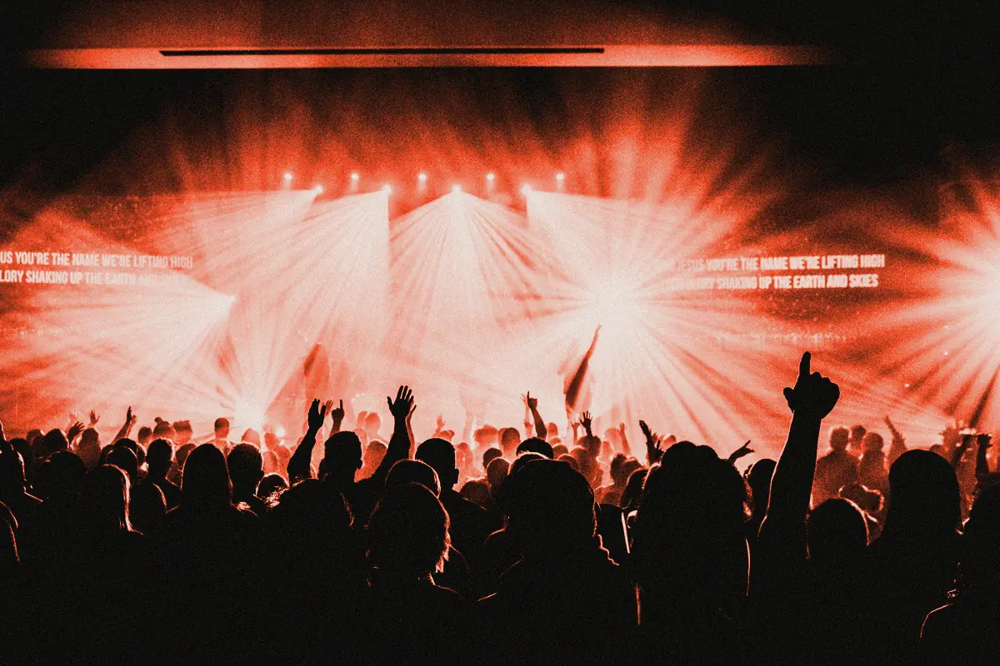
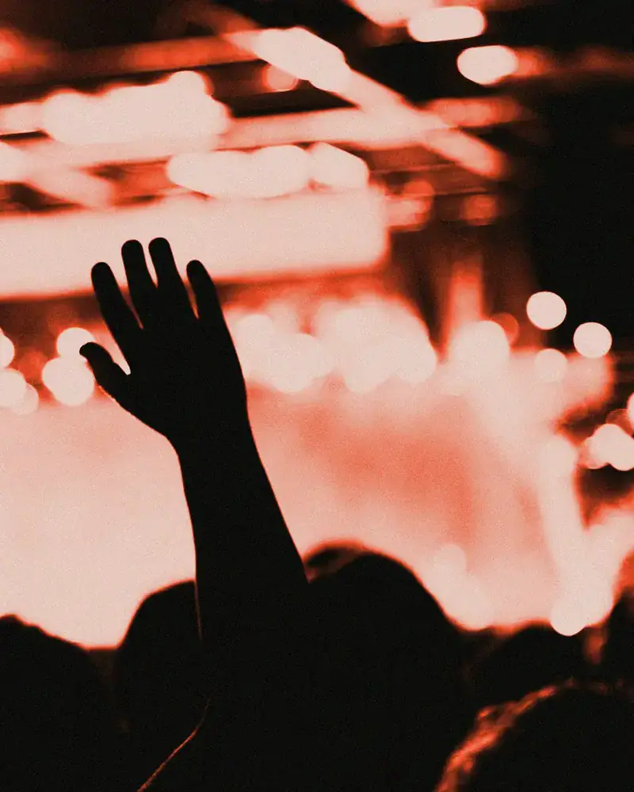

Trois nuits sous la halle
Festival Tôle, Rezé, du 12 au 14 juin. Faites défiler : la bande avance de côté, chaque photo glisse dans son cadre. Démo : textes fictifs.

Lune OrageVendredi, 22 h 40 
La fosseVendredi, minuit 
Sœurs MirageSamedi, 21 h 
KiosqueSamedi, 23 h 15 
La halle2 800 personnes 
Dernier rappelDimanche, 1 h 
Atlas FanfareDimanche, 20 h 
ClôtureDimanche, 23 h 50
Aucun épinglage GSAP : la bande reste collée à l’écran (sticky CSS) le temps que toutes les photos passent, puis repart avec la page. Elle traverse l’écran pendant que la section passe. En mouvement réduit, elle reste immobile et se fait glisser au doigt ou au clavier.